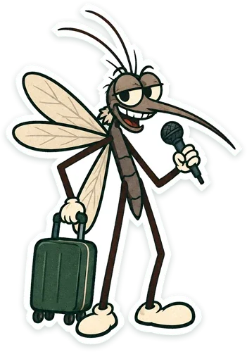

Bucaramanga y el Área Metropolitana experimentan dos temporadas de lluvias principales cada año: la primera entre abril y mayo, y la segunda entre septiembre y noviembre. Durante estos períodos, la combinación de humedad elevada y temperaturas cálidas constantes (23 °C a 28 °C) crea un escenario perfecto para la proliferación de plagas en hogares, restaurantes y negocios de toda la región.
Cada temporada de lluvias, nuestro equipo en AGROINCOL recibe un incremento notable de llamadas de emergencia por invasiones de cucarachas, roedores que aparecen de la nada, mosquitos que no dan tregua y hormigas que invaden cocinas enteras. No es casualidad: las lluvias alteran el ecosistema urbano y obligan a las plagas a buscar refugio en nuestros espacios.
La buena noticia es que con preparación adecuada, puede minimizar significativamente el impacto de las plagas durante la temporada de lluvias. Esta guía explica qué plagas aparecen, por qué, y qué puede hacer para proteger su propiedad.
¿Por Qué las Lluvias Aumentan las Plagas?
La relación entre las lluvias y el aumento de plagas no es un mito: es un fenómeno biológico bien documentado que se amplifica en zonas tropicales como Santander. Las lluvias afectan a las plagas de múltiples maneras simultáneas.
Las lluvias fuertes inundan las madrigueras subterráneas de roedores y las colonias de hormigas, obligándolos a buscar refugio en terreno seco: su casa, su restaurante, su oficina. Los roedores, en particular, se desplazan desde el alcantarillado hacia los interiores de las edificaciones buscando alimento y refugio. Es por eso que muchas personas reportan ver ratas o ratones por primera vez durante las lluvias.
El agua estancada que dejan las lluvias — en llantas, materas, tanques destapados, canaletas obstruidas y cualquier recipiente — se convierte en criadero de mosquitos y zancudos. En Santander, zona endémica de dengue, esto representa un riesgo de salud pública significativo. Un solo recipiente con agua estancada puede producir cientos de mosquitos en menos de una semana.
La humedad ambiental elevada acelera el ciclo reproductivo de las cucarachas. Estas necesitan ambientes húmedos para sobrevivir, y la temporada de lluvias les da exactamente eso. Las cucarachas que durante la temporada seca estaban confinadas a áreas húmedas específicas (baños, cocinas, sifones) ahora encuentran humedad en toda la casa, expandiendo su territorio.
Las 5 Plagas más Comunes en Temporada de Lluvias en Santander
1. Mosquitos y Zancudos
Son la plaga más peligrosa durante las lluvias en Santander. El Aedes aegypti, vector del dengue, Zika y chikungunya, se reproduce en agua limpia estancada. Según la Secretaría de Salud de Santander, la temporada de lluvias concentra históricamente el mayor número de casos de dengue en la región. Un solo mosquito hembra puede poner hasta 200 huevos en un recipiente con agua, y los huevos eclosionan en apenas 2 a 3 días.
2. Cucarachas
La humedad es el combustible de la reproducción de cucarachas. Durante las lluvias, las cucarachas americanas (las grandes, de color marrón rojizo) se vuelven más activas y visibles, mientras que las cucarachas alemanas (las pequeñas, de color marrón claro) aceleran su ritmo reproductivo en cocinas y baños. Es común ver más cucarachas saliendo por sifones y desagües durante esta temporada.
3. Roedores (Ratas y Ratones)
Las lluvias fuertes inundan el alcantarillado y las madrigueras subterráneas, empujando a los roedores hacia la superficie y hacia el interior de las edificaciones. Las ratas de alcantarilla (Rattus norvegicus) pueden trepar tuberías, nadar, y entrar por espacios increíblemente pequeños. Durante las lluvias, los reportes de roedores en viviendas y negocios del Área Metropolitana de Bucaramanga se multiplican.
4. Hormigas
Las colonias de hormigas construyen sus nidos bajo tierra. Cuando las lluvias inundan sus túneles, colonias enteras migran masivamente hacia el interior de las viviendas buscando terreno seco y acceso a alimentos. Es por eso que de un día para otro pueden aparecer filas de hormigas en su cocina o baño que antes no existían.
5. Termitas Voladoras
Las primeras lluvias fuertes de la temporada activan los vuelos nupciales de las termitas. Miles de termitas aladas salen de sus colonias para reproducirse y establecer colonias nuevas. Se sienten atraídas por la luz y es común verlas alrededor de lámparas y ventanas en las noches de lluvia. Si encuentran madera húmeda en su propiedad, pueden establecer una nueva colonia que causará daño estructural silencioso durante meses o años.
Cómo Proteger su Hogar Durante la Temporada de Lluvias
Estas medidas preventivas pueden marcar la diferencia entre una temporada de lluvias tranquila y una pesadilla con plagas:
- Elimine todos los recipientes que puedan acumular agua estancada: llantas, materas, baldes, tapas, latas.
- Revise y limpie canaletas y bajantes de agua: las canaletas obstruidas acumulan agua y atraen mosquitos.
- Selle grietas y hendiduras en paredes exteriores, pisos, marcos de puertas y ventanas.
- Verifique que los burletes de puertas y ventanas estén en buen estado para evitar el ingreso de insectos y roedores.
- Almacene leña, cartón y materiales orgánicos alejados de las paredes de su casa.
- Mantenga los sifones con agua (vierta agua regularmente en los que no usa) para evitar que las cucarachas suban por las tuberías.
- Programe fumigación preventiva ANTES de que arranque la temporada de lluvias, idealmente 2 a 3 semanas antes.
Cómo Proteger su Restaurante o Negocio
Para los establecimientos comerciales, especialmente los del sector de alimentos, la temporada de lluvias requiere atención adicional:
- Verifique que su certificado de fumigación esté vigente: si vence durante la temporada de lluvias, renuévelo antes.
- Considere reforzar su programa de control con visitas más frecuentes durante los meses de lluvia.
- Inspeccione áreas de almacenamiento y bodegas en busca de humedad, filtraciones o señales de roedores.
- Verifique que todos los desagües tengan rejillas en buen estado para impedir el ingreso de cucarachas y roedores.
- Refuerce la limpieza de áreas exteriores, especialmente zonas de acopio de basura.
Si su restaurante necesita actualizar su programa de control de plagas para la temporada, conozca nuestro servicio especializado de fumigación para restaurantes con certificación válida ante el INVIMA.
Dato de salud pública: En Bucaramanga, el dengue sigue siendo un problema serio. Según la Secretaría de Salud de Santander, la temporada de lluvias concentra el mayor número de casos. Eliminar criaderos de mosquitos en su propiedad no solo lo protege a usted: protege a toda su comunidad.
¿Cuándo Fumigar si ya Empezó la Temporada?
Lo ideal es fumigar preventivamente 2 a 3 semanas antes de que arranque la temporada de lluvias. Esto le da al tratamiento tiempo para establecer una barrera de protección antes de que las plagas se activen. Si ya empezó la temporada y está viendo plagas, la recomendación es actuar inmediatamente: cada día de demora permite que las poblaciones crezcan exponencialmente.
Use nuestra calculadora gratuita de frecuencia de fumigación para obtener una recomendación personalizada según su tipo de propiedad y condiciones específicas.
¿La temporada de lluvias ya trajo plagas a su propiedad? Contáctenos hoy para una inspección y servicio de control profesional. Atendemos todo el Área Metropolitana de Bucaramanga y respondemos por WhatsApp en menos de 5 minutos.

Llegó AGROINCOL. Nos vamos.